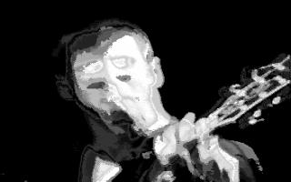
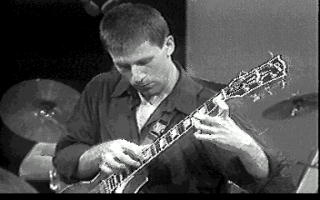

Nick Didkovsky is a guitarist, composer, and computer music programmer. In 1983, he founded the avant-rock septet Doctor Nerve. He presently resides in New York City, where he composes for Doctor Nerve and other ensembles, programs music software, and teaches computer music composition at NYU.
Didkovsky’s work with Doctor Nerve joins the furious energy of rock with intricate composition, some of which finds its origins in rich software systems of his own design. His non-didactic approach to combining human and machine creativity is his unique fingerprint in a musical world that pushes the boundaries of rock music, algorithmic composition, and contemporary classical formal systems.
Doctor Nerve recently released their sixth CD, "Every Screaming Ear" (Cuneiform). This CD features special collaborative projects between Doctor Nerve and The Meridian Arts Ensemble, NewEar Chamber Orchestra, and Japan’s Isso Yukihiro Group. The CD also contains concert performances of Doctor Nerve, recorded in New York, Holland, and Germany.
In 1997 and 1998, Doctor Nerve collaborated with The Sirius String Quartet, premiering Didkovsky’s new work for the expanded ensemble, entitled Ereia. Ereia was commissioned with support from the Jerome Foundation, The American Composers Forum, Harvestworks, and the Mary Flagler Cary Charitable Trust. The three-movement piece premiered at the FIMAV Festival in Victoriaville, Quebec, on May 19, 1997. Ereia enjoyed its New York premiere at The Kitchen on January 10, 1998. Recently, the Aaron Copland Foundation supported the recording of Ereia with a production grant.
Didkovsky is a member of the Fred Frith Guitar Quartet, which recently released its first CD, called Ayaya Moses (Ambiances Magnetique). The band tours extensively, and has performed in festivals and venues all over the world. Didkovsky has contributed twelve compositions, including Black Iris (released on Binky Boy, see below), and She Closes Her Sister With Heavy Bones (Ayaya Moses).
Didkovsky’s recording residency at Harvestworks/Studio PASS culminated in a collection of new works for electric guitar. The recordings were released in November of 1997 as a new CD, entitled Binky Boy, and was produced by Didkovsky’s own Punos Music label.
Compositions include Amalia’s Secret, for the Bang On A Can All-Stars (SONY Classical), and a duo for All-Stars’ cellist Maya Beiser and percussionist Steve Schick. The latter work, entitled Caught By The Sky With Wire, premiered in 1996 and was broadcast live from The Kitchen on John Schaeffer’s "New Sounds Live" radio program in 1997. New works have been commissioned by choreographers Carrie Hanson (Dance Theatre Mannheim), Sara Hook (Alvin Ailey School), and John Malashock (Malashock Dance Company).
Recent awards include a supporting grant from the Jerome Foundation to produce an interactive comic book for the World Wide Web (www.turbulence.org) which he programmed in Java, and a commissioning grant from The Mary Flagler Cary Charitable Trust to create a new composition for The Meridian Arts Ensemble.
He has been collaborating with Phil Burk on translating Hierarchical Music Specification Language (HMSL) to Java (dubbed "JMSL"). He performed his first piece in this new computer music language at Circuits: The Governor’s Conference on Arts and Technology, in Palisades, NY in March, 1998. This piece, a deconstruction of a Schubert Impromptu, will appear on a CRI Records CD in 1999.
